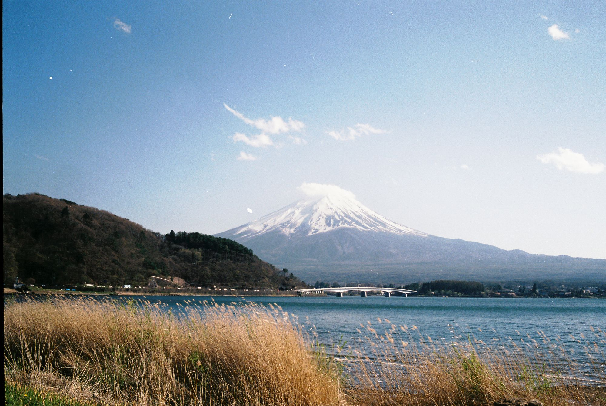

April 24, 2024
Looking back on my solo trip to Japan feels like flipping through a photo album of cherished memories. It all started with the excitement of touching down in Tokyo, a city that buzzes with energy day and night.
As a college student exploring solo, Japan was a dream destination for me, and every day was filled with new adventures and incredible experiences.
Getting around Tokyo was an adventure in itself. Skyscrapers towered above me, adorned with bright lights and flashy signs. Amidst the chaos of the city, ancient temples and shrines offered moments of tranquility and reflection.
From the famous scramble crossing in Shibuya to the peaceful gardens of Meiji Shrine, every corner of Tokyo had its own story to tell.
One of the most unforgettable parts of my journey was the day I climbed Mount Fuji. Waking up before dawn, I joined a group of fellow travelers and embarked on the ascent.
The air was crisp and cool as we made our way up the mountain, each step bringing us closer to the summit. As the sun rose in the sky, painting the horizon in hues of pink and orange, I felt a sense of exhilaration unlike anything I had ever experienced before.
Reaching the peak of Mount Fuji was a moment of triumph, a reminder of the beauty and power of nature.

But it wasn't just the big adventures that made Japan special—it was the little moments too. The smell of street food sizzling on grills, the sound of traditional music drifting through the air, the warmth of a bowl of ramen on a chilly evening—these are the memories that I'll carry with me long after I've returned home.
As I look back on my time in Japan, I'm filled with gratitude for the opportunity to explore this incredible country. Japan captured my heart in ways I never expected, and I know that this journey will stay with me for a lifetime.